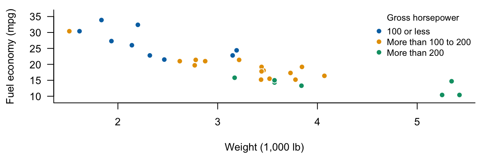

Assignment 3
STAT 8561 | Fall 2026
Due date: Friday, October 30, 2026
Total: 40 points
Coverage: Chapter 4 and the introductory portions of Chapter 5.
Download the student questions (PDF)
Questions 1-3 review Chapter 4. Question 4 introduces indicator coding and additive models from Chapter 5; the model and a reading guide are supplied. Complete Question 4 after those topics have been covered in class.
| Question | Topic | Points |
|---|---|---|
| 1 | Model-comparison concepts | 10 |
| 2 | ANOVA and extra sums of squares | 10 |
| 3 | Reading a nested-model comparison | 8 |
| 4 | Guided introduction: two groups and one predictor | 12 |
| Total | 40 |
NoteInstructions
Use Quarto or R Markdown. Upload both files to the Assignment 3 submission folder on iCollege:
- Your rendered PDF, named
A3_LastName_FirstName.pdf. - Its matching source, named
A3_LastName_FirstName.qmdorA3_LastName_FirstName.Rmd.
The PDF must be generated from the submitted source. HTML alone does not satisfy the submission requirement.
- Put your name and course number at the beginning; label each question and subpart.
- For multiple-choice items, enter exactly one letter. For True/False items, enter only
TorF. - For numerical items, report only the requested value. Round to three decimal places, retaining full precision during calculations. Degrees of freedom should be integers.
- No written explanations, derivations, or R output are required. All information needed to answer the questions is supplied.
- R is optional for checking. If you use R, include your code after your answers in executable chunks.
- Your source must render without errors. Use LaTeX for mathematics; do not submit screenshots of answers or code.
Notation and assumptions. \(p\) counts all independent design columns, including the intercept. Use \(\alpha=0.05\). Assume fixed full-rank designs and independent \(N(0,\sigma^2)\) errors under the full model. Nested comparisons use the same response and observations, except the invalid comparison described in Question 1(e).
Question 1: What Model Comparisons Establish [10]
Select exactly one answer for each part. No written explanation is required.
(a) Adding a predictor [2]
A full OLS model adds an independent predictor column to a reduced model. Which statement must hold for the observed data?
A. \(\mathrm{SSE}_F<\mathrm{SSE}_R\) strictly.
B. \(\mathrm{SSE}_F\leq\mathrm{SSE}_R\), with equality possible.
C. \(\mathrm{SSE}_F>\mathrm{SSE}_R\) because one degree of freedom is lost.
D. The added predictor has a statistically significant coefficient.
(b) The overall regression sum of squares [2]
The full model includes an intercept. Which reduced model gives \(\mathrm{SSE}_R-\mathrm{SSE}_F=\mathrm{SSR}_F\)?
A. Any model obtained by deleting one predictor.
B. The same full model written with different coefficient names.
C. The intercept-only model.
D. The model that fixes every fitted mean at zero.
(c) An overall rejection [2]
An overall F test rejects the null that all slopes are zero. What is the appropriate conclusion under the stated model assumptions?
A. There is evidence that at least one slope is nonzero.
B. Every slope is individually significant at the 5% level.
C. Every predictor has a causal effect on the response.
D. The fitted model has the lowest possible future prediction error.
(d) Training fit [2]
Both nested models include an intercept and \(\mathrm{SST}>0\). What can happen when a predictor is added?
A. Training \(R^2\) must increase strictly.
B. Both \(R^2\) and adjusted \(R^2\) must increase.
C. Training \(R^2\) can decrease because the residual degrees of freedom decrease.
D. Training \(R^2\) cannot decrease, but adjusted \(R^2\) may decrease.
(e) A missing-data trap [2]
lm(y ~ x) uses 30 observations; lm(y ~ x + z) uses 26 because z is missing for four observations. What should be done before using the nested-model partial F formula?
A. Use both SSE values as printed; nested formulas are sufficient.
B. Refit both models to the same complete-case observations for y, x, and z.
C. Replace the four missing z values by zero without further justification.
D. Divide each SSE by its own sample size before subtracting them.
Question 2: ANOVA and Extra Sums of Squares [10]
Two models use the same \(n=24\) observations:
\[ \begin{aligned} M_R:\quad \mu_R(x)&=\alpha_0+\alpha_1x,\\ M_F:\quad \mu_F(x,z)&=\beta_0+\beta_1x+\beta_2z. \end{aligned} \]
The design ranks are \(p_R=2\) and \(p_F=3\). You are given
\[ \mathrm{SST}=120,\qquad \mathrm{SSE}_R=54,\qquad \mathrm{SSE}_F=42. \]
(a)-(h) Numerical answers [8]
Give one number per row. Each row is worth 1 point. Here \(\mathrm{SSR}_F\) uses the intercept-only model as its baseline.
| Item | Quantity | Your answer |
|---|---|---|
| (a) | Full-model \(\mathrm{SSR}_F\) | _____ |
| (b) | Full-model error degrees of freedom | _____ |
| (c) | Full-model \(\mathrm{MSE}_F\) | _____ |
| (d) | Overall F statistic for \(H_0:\beta_1=\beta_2=0\) | _____ |
| (e) | Full-model \(R^2\) | _____ |
| (f) | Full-model adjusted \(R^2\) | _____ |
| (g) | Extra sum of squares for adding \(z\) after \(x\) | _____ |
| (h) | Partial F statistic for \(H_0:\beta_2=0\) | _____ |
Formula reminders:
\[ \bar R_F^2=1-\frac{\mathrm{SSE}_F/(n-p_F)}{\mathrm{SST}/(n-1)},\qquad F_{\mathrm{partial}}=\frac{(\mathrm{SSE}_R-\mathrm{SSE}_F)/(p_F-p_R)}{\mathrm{SSE}_F/(n-p_F)}. \]
(i) Decision [2]
For part (h), the null reference distribution is \(F_{1,21}\), with 5% upper-tail critical value 4.325. Select one conclusion.
A. Fail to reject: the partial F statistic does not exceed 4.325.
B. Reject: there is evidence that \(z\) contributes to the mean after accounting for \(x\).
C. Reject: this establishes that every slope is individually significant.
D. The test cannot be performed without fitting the models in R.
Question 3: Does Horsepower Add Information Beyond Weight? [8]
R’s mtcars data contain 32 automobile models. The response is fuel economy (mpg, miles per US gallon); predictors are weight (wt, in 1,000 lb) and gross horsepower (hp). The data are observational.
Figure 1 motivates the question: does horsepower contribute to the mean after accounting for weight?
Model summaries (no R required).
\[ \begin{aligned} M_R:\quad \mu_R(w)&=\alpha_0+\alpha_w w,\\ M_F:\quad \mu_F(w,h)&=\beta_0+\beta_w w+\beta_h h. \end{aligned} \]
Both fits use the same \(n=32\) observations, with \(p_R=2\) and \(p_F=3\). In the full model, the test of \(\beta_h=0\) gives \(t_h=-3.518712\) and a two-sided p-value of 0.001451.
(a) The null hypothesis [2]
Which null tests whether horsepower adds information after accounting for weight?
A. \(\beta_w=0\); B. \(\beta_0=0\); C. \(\beta_h=0\); D. \(\beta_w=\beta_h=0\).
(b) Reference distribution [2]
Which is the null reference distribution for the partial F test comparing these models?
A. \(F_{2,29}\); B. \(F_{1,30}\); C. \(F_{2,30}\); D. \(F_{1,29}\).
(c) Connect the tests [2]
For this single restriction, \(F=t_h^2\). Report the partial F statistic to three decimal places.
(d) What does the result establish? [2]
Enter T or F for each statement (1 point each).
| Item | Statement | T/F |
|---|---|---|
| (i) | At the 5% level, there is evidence that horsepower contributes to the mean after accounting for weight. | _____ |
| (ii) | This result proves that changing horsepower causes a change in fuel economy. | _____ |
Question 4: Guided Introduction to Chapter 5 [12]
In a hypothetical plant-growth study, \(Y\) is plant height (cm), \(x\) is daily water volume (mL/day, observed from 8 to 12), and fertilizer is A or B. Define
\[ x_c=x-10,\qquad z=\begin{cases}0,&\text{fertilizer A},\\1,&\text{fertilizer B}.\end{cases} \]
The additive mean model and its fitted equation are
\[ \begin{aligned} \mu(x,z)&=\beta_0+\beta_x(x-10)+\beta_gz,\\ \widehat\mu(x,z)&=18+1.5(x-10)+4z. \end{aligned} \]
Reading guide. Substitute \(z=0\) for A and \(z=1\) for B. The additive model has a common slope because it contains no product term \((x-10)z\). A design row uses column order \((1,x_c,z)\). See Chapter 5: indicator coding and additive models.
(a) Group B’s population mean [2]
Which expression is \(\mu_B(x)\)?
A. \(\beta_0+\beta_x(x-10)\); B. \(\beta_0+\beta_g+\beta_x(x-10)\).
C. \(\beta_0+(\beta_x+\beta_g)(x-10)\); D. \(\beta_g+\beta_x x\).
(b) Design rows [2]
Which pair gives the rows for A at \(x=8\) and B at \(x=12\), in that order?
A. \((1,8,0)\) and \((1,12,1)\).
B. \((1,-2,1)\) and \((1,2,0)\).
C. \((1,-2,0)\) and \((1,2,1)\).
D. \((0,-2,0)\) and \((1,2,1)\).
(c) Fitted means [2]
Give the fitted mean height at \(x=12\) for A and for B, in cm (1 point each).
(d) Adjusted group difference [2]
At the same water volume, what is the fitted B-minus-A mean difference, in cm? Give one number.
(e) Interpret the slope [2]
Which statement correctly interprets the fitted coefficient 1.5?
A. Within either fertilizer group, one additional mL/day of water is associated with a 1.5-cm increase in fitted mean height.
B. Every individual plant grows exactly 1.5 cm when water increases by one mL/day.
C. At the same water volume, B has a fitted mean height 1.5 cm higher than A.
D. The water slope is 1.5 for A and \(1.5+4=5.5\) for B.
(f) Connect to Chapter 4 [2]
Which null hypothesis and reduced model test the fertilizer contribution after accounting for water, within this additive model?
A. \(H_0:\beta_x=0\); reduced mean \(\alpha_0+\alpha_gz\).
B. \(H_0:\beta_0=0\); reduced mean \(\alpha_x(x-10)+\alpha_gz\).
C. \(H_0:\beta_x=\beta_g=0\); reduced mean \(\alpha_0\).
D. \(H_0:\beta_g=0\); reduced mean \(\alpha_0+\alpha_x(x-10)\).